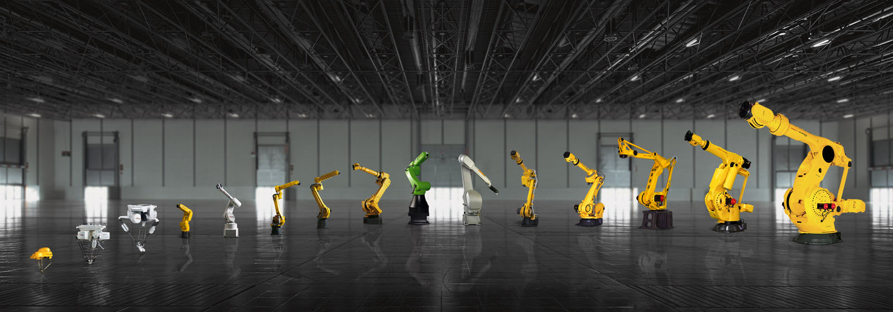

Fanuc Diretory
Context:
The company name is an acronym for Fuji Automatic NUmerical Control. Fanuc Robotics offers the widest range of industrial robots in the world. Covering a diverse range of applications and industries, FANUC robots are easy to operate and provide complete flexibility thanks to a range of application-specific options, straightforward integration, payloads up to 2.3 t and maximum reaches up to 4.7 m.
User and tecnical Manual
Starting Fanuc Robots in Auto
External cycle start button:
1) You should have UOP signals enabled (MENU/SYSTEM/CONFIG/Enable UI signals - True)
2) Remote / Local setup must be set to Remote ((MENU/SYSTEM/CONFIG/Remote / Local setup - Remote) or controlled by input
3) UI signal 1,2.3 and 8 must be ON (IMSTP, HOLD, SFSPD, Enable)
4) MENU/SETUP/PROG Select - RSR/PNS/STYLE... Setup of remote start system
Steps 1-3 makes remote start possible. Step 4 defines method which will be used for remote start:
RSR (Robot service request) - one signal is dedicated for each of RSR inputs and starts specified RSR program
PNS (Program number select) - set of binary inputs (PNS1-PNS8) is translated to decimal number and PNS with corresponding decimal number is started
Style - each Style signal has predefined name of program which will be started
Other - one program specified in variable $shell_wrk.$cust_name is started when UI[6] is On
Depending on program select and program start option you must use appropriate UI signals. (RSR, PNS+PNSTROBE+PRODSTART and so on)
source: robot-forum
A SIMPLE JOB REQUEST HANDSHAKE:
Starting Fanuc Robots in Auto
i = 0;
! get_job.ls
LBL[1] ;
WAIT (DI[1:job request]) TIMEOUT,LBL[500] ;
R[1:job]=GI[1] ;
! GO[1:job] echos R[1] in BG logic ;
DO[1:job ack]=ON ;
LBL[2] ;
WAIT (!DI[1:job request]) TIMEOUT,LBL[501] ;
DO[1:job ack]=OFF ;
END ;
;
LBL[500] ;
! timed out waiting for job ;
JMP LBL[1] ;
;
LBL[501] ;
! timed out waiting for job request to go low ;
JMP LBL[2] ;